Clásico
El original: carne, vinagre de sidra y sal. El punto de partida.
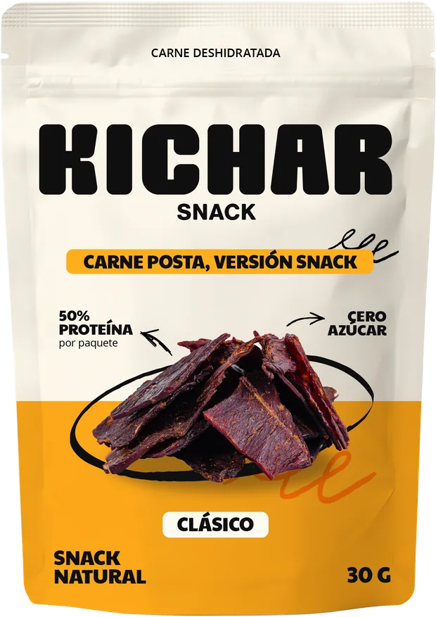
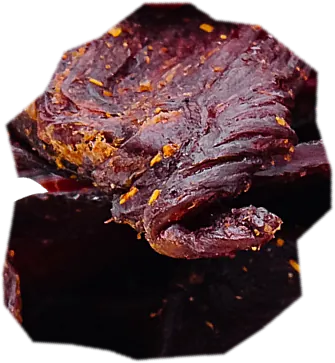
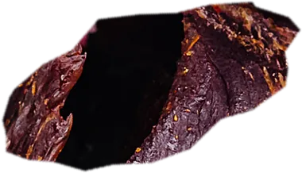
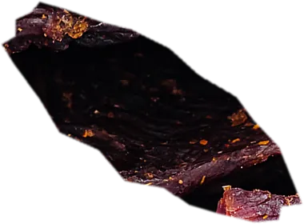
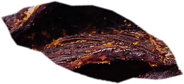
Durante generaciones, la carne deshidratada fue la forma de conservar los alimentos. Recuperamos esa idea y la llevamos al presente: un snack cárnico para una vida activa.
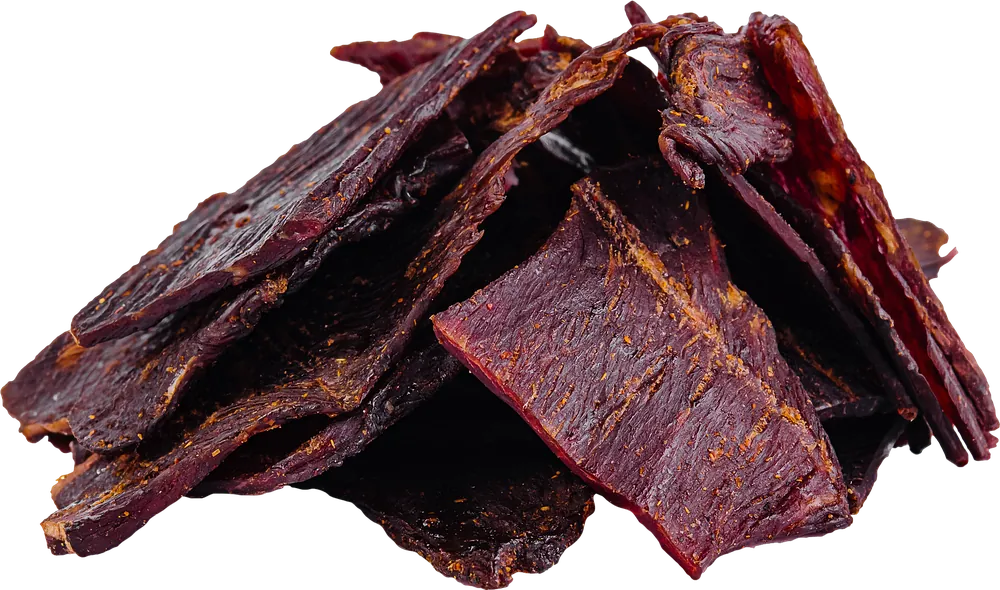
El original: carne, vinagre de sidra y sal. El punto de partida.
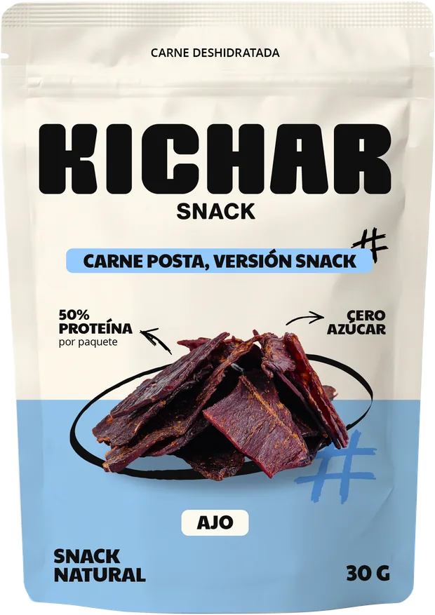
Sabor intenso a ajo, para los que van de frente.
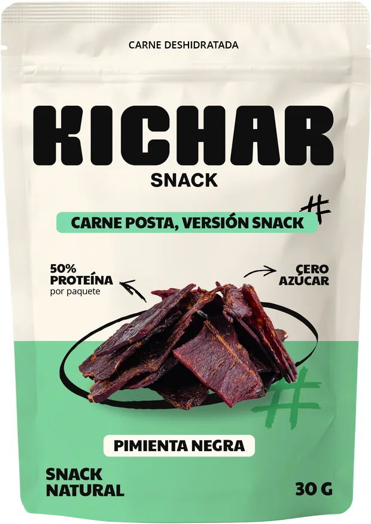
Pimienta molida gruesa. Picor seco, aroma fuerte.
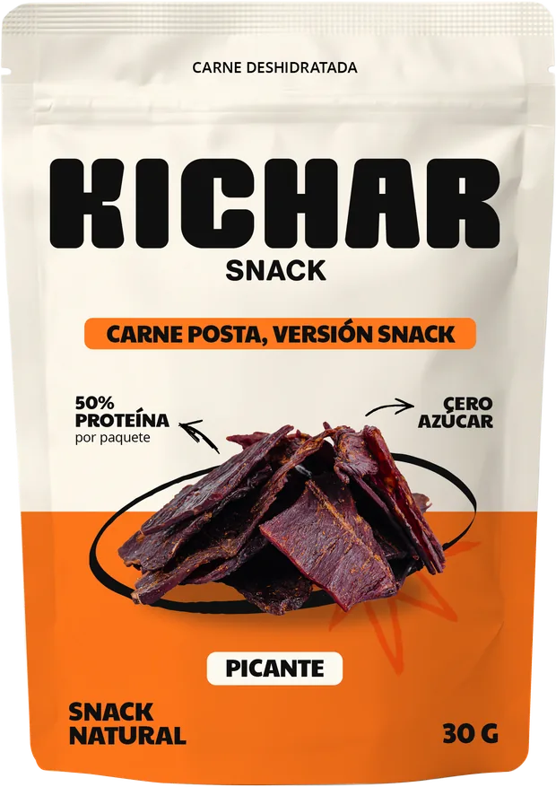
Para arrancar el día con calor.
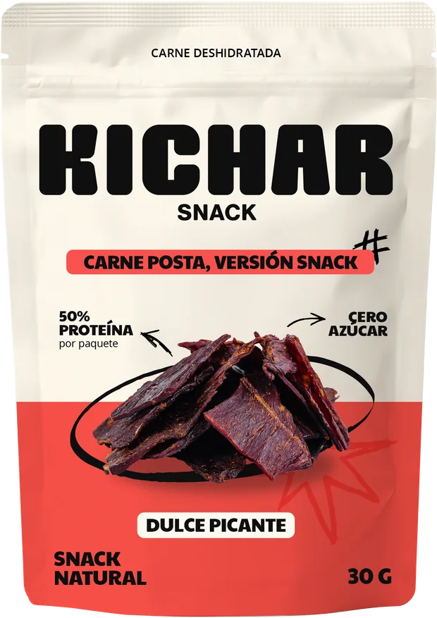
Un toque dulce y un final que pica.
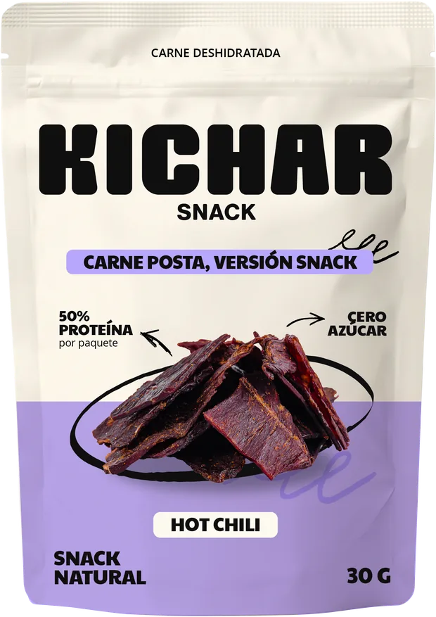
El más picante de la línea.
Gimnasios, almacenes, dietéticas, kioscos y distribuidores. Dejanos tus datos y te enviamos la propuesta comercial.
El movimiento depende de tener cada elemento en una capa separada. Una foto plana no se puede mover por partes; un trozo de carne recortado sí. Los trozos de este boceto salen de recortar la foto de la pila y por eso se ven toscos. Las descripciones de sabores, el banner y las fotos marcadas con rayas son de ejemplo.
| Material | Para qué sección | Formato | Prioridad |
|---|---|---|---|
| Pouches de frente (6 sabores) | Inicio, Productos, Día a día, Distribuidores | PNG transparente, ya recibido | Ya tenemos |
| Logo KICHAR | Inicio, Contacto | SVG vectorial, cada letra como trazado separado + versión completa | Imprescindible |
| Trozos de carne sueltos | Inicio (primer plano), Productos | 8–10 piezas fotografiadas de a una, PNG transparente ≥ 2000 px, ángulos variados | Imprescindible |
| Garabatos de marca (espiral, estrella, numeral, flechas, óvalo) | Todas | SVG con trazos abiertos (sin expandir contorno) para poder dibujarlos en pantalla | Imprescindible |
| Paleta oficial | Productos (fondo por sabor), todo el sitio | HEX de cada sabor + neutros, tipografías con licencia web | Imprescindible |
| Tabla nutricional validada | Por qué Kichar, ficha de producto | Texto o planilla con valores reales por sabor | Imprescindible |
| Fotos lifestyle | Día a día | 4–5 escenas, cada una en vertical 4:5 y horizontal 16:9, ≥ 2400 px | Deseable |
| Ingrediente por sabor (ajo, pimienta, chile, etc.) | Productos | PNG transparente | Deseable |
| Sellos / stickers de atributos | Por qué Kichar | SVG | Deseable |
| Dorso de los pouches | Productos (giro del paquete) | PNG transparente, mismo encuadre que el frente | Upgrade |
| Clips de video cortos | Día a día, Inicio | MP4 5–8 s, sin audio, loopeable | Upgrade |
| Modelo 3D del pouch | Inicio (paquete girando en 3D) | .glb / .gltf, o archivo de Spline | Upgrade |
garabato-espiral.svg).logo/, producto/, carne/, garabatos/, fotos/.